Pioneering the Future of Human Motion Prediction on the 7th edition on our workshop on Long-term Human Motion Prediction
Join us for the 7th Workshop on Long-term Human Motion Prediction, where experts from around the globe gather to share insights, innovative research, and cutting-edge developments in predicting human motion over extended periods. This workshop is a unique platform to explore how advancements in AI, robotics, and biomechanics can revolutionize human-computer interaction and safety.
Areas of interest
Anticipating human motion is a key skill for intelligent systems that share a space or interact with humans. Accurate long-term predictions of human movement trajectories, body poses, actions or activities may significantly improve the ability of robots to plan ahead, anticipate the effects of their actions or to foresee hazardous situations. The topic has received increasing attention in recent years across several scientific communities with a growing spectrum of applications in service robots, self-driving cars, collaborative manipulators or tracking and surveillance. This workshop is the seventh in a series of ICRA 2019-2025 events. The aim of this workshop is to bring together researchers and practitioners from different communities and to discuss recent developments in this field, promising approaches, their limitations, benchmarking techniques and open challenges.
Call for Papers
We welcome researchers in the field to submit papers to be presented in pitch-talks and as posters. Submitted manuscripts can be at most 4 pages (excluding references), formatted according to ICRA standards using the Paper Template downloadable on the IEEE ICRA 2025 website (two-column format). We encourage authors to additionally submit a video clip to complement their manuscript. Submissions will be reviewed and selected based on their originality, relevance to the workshop topics, contributions, technical clarity, and presentation.
Important Dates:
- Submission Deadline: TBA, 2025
- Author Notification: TBA, 2025
- Workshop: TBA, 2025
We look forward to receiving your submissions!
Topics of Interest
- Motion trajectory prediction in 2D and 3D
- Predicting articulated human motion
- Early action and activity recognition
- Motion and Task Planning in dynamic environments considering motion predictions
- Uncertainties related to prediction inputs/outputs and their propagation
- Anticipation of group and crowd motion
- Human motion prediction and safety
- Human-robot Interaction considering predictions
- Evaluation of prediction algorithms: datasets, metrics, and benchmarks
- Predictive planning and control
- Applications of motion prediction techniques
- Visual scene prediction
Organizers

In collaboration with


 






Get in touch
In case you wish to get more information feel free to reach us via e-mail!
andrey.rudenko@de.bosch.com
luigi.palmieri@de.bosch.com
tim.schreiter@tum.de